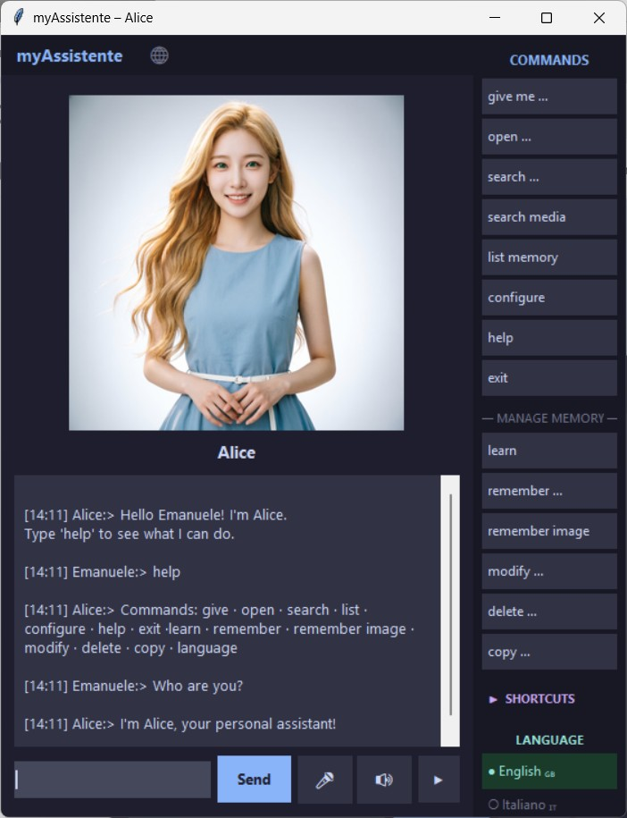

Welcome! 👋
Explore the official documentation for myAssistente. Whether you are a new user or a developer looking to customize the experience, you'll find all the technical references here.
🚀 The Program
- Privacy First: myAssistente is designed to be your local companion, keeping your data secure and offline whenever possible. 🔒
- Cross-Platform: It runs on any OS with Python installed. Ready-to-use packages are available for Windows and Linux. 💻
📚 Documentation List
Choose a manual to learn more about specific features:
- ⚙️ (1) Installation Manual — program installation for Windows, linux or python multiplatform
- 📖 (2) User Manual — myAssistente user interface
- 🛠️ (3) Configuration Manual — file
config.jsonadvanced configurations - 📌 (4) Memory Manual — file
memory.jsonmemory configuration - 🌍 (5) Language Manual — file
lang[].jsonlanguage localization - 💡(6) AIML Manual — file
aiml/[LANG]/[filename].aimlwith additional AIML options - 🧪(7) Advanced AIML — file
aiml/IT/testConiglio.aimlAIML test in Italian - 🌐 Project presentation – The vision behind the software
🛠 GitLab Resources
For developers and advanced users, more technical guides are available in our ./docs folder on GitLab, including AI configuration and build instructions.
Refer to the table below to track the localization status of all available manuals:
| Manual | Description | Release | English | Italian |
|---|---|---|---|---|
| (1) Installation manual | Windows, Linux o Python installation guide | 5 | ✔️ | ✔️ |
| (2) User manual | First steps | 5 | ✔️ | ✔️ |
| (3) Configuration manual | Configuration procedure | 5 | ✔️ | ✔️ |
| (4) Memory manual | Memory configuration procedure | 5 | ✔️ | ✔️ |
| (5) Language manual | myAssistente localization settings | 5 | ✔️ | ✔️ |
| (6) AIML manual | AIML language settings | 5 | ✔️ | ✔️ |
| (7) Advanced AIML manual | AIML Italian test and myAssistente personality settings | 5 | ❌ | ✔️ |
| config.json guide | Main configuration settings | 5 | ✔️ | ✔️ |
| lang_XX.json guide | Language settings | 5 | ✔️ | ❌ |
| AI configuration guide | AI API isetting | 5 | ✔️ | ✔️ |
| Quick Start up guide | Installation and first steps | 5 | ✔️ | ❌ |
| Build Packages guide | Creating Win/Linux/macOS bundles | 5 | ✔️ | ✔️ |
| Windows Commands guide | Specific settings for WinOS | 5 | ✔️ | ✔️ |
| AIML parser guide | Test inside aiml_parser.py | 5 | ❌ | ✔️ |
| Add Plugin guide | How to add a JavaScript plugin | 5 | ❌ | ✔️ |
📸 Gallery

🤝 How to Contribute
myAssistente is 100% free and open-source. Your support helps keep the project active!
🍏 macOS Users: Build and test the distributable packages for Mac.
🌍 Translators: Help us bring myAssistente to new languages by editing lang_it.json and test the available ones.
🧪 Beta Testers: Report bugs or suggest new features on GitLab.
☕ Support my Work
This project is a labor of love developed in my spare time. If you find it useful, consider a small gesture to support future updates!
🎁 Buy me a coffee:
📚 Books: You can also support me by checking out my books on Amazon. Happy reading!
Thank you for your time and support! ✨